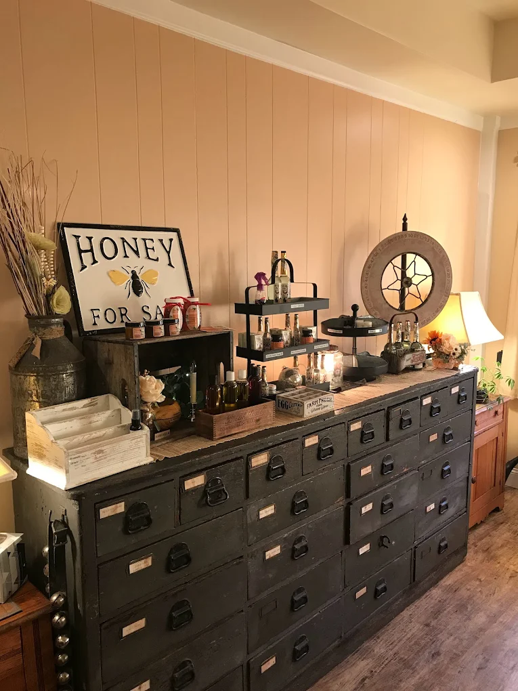
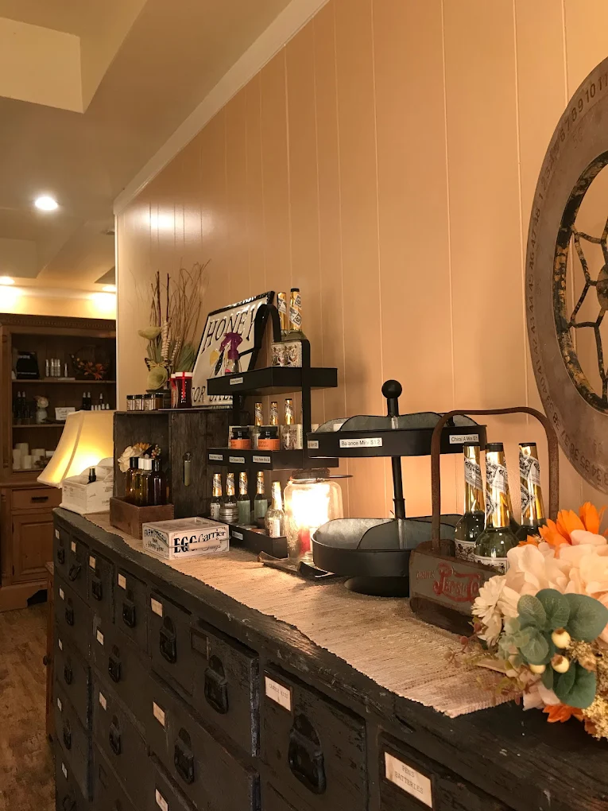
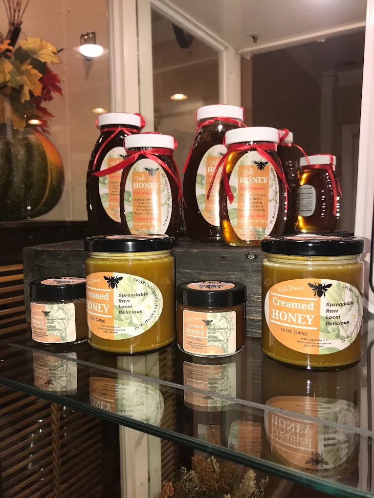

Clients return for years
Reviewers describe Serenity as the kind of independent wellness center they choose over chain spas — visit after visit, year after year.
Media, PA — Personal wellness care
Serenity Wellness Center offers massage, facials, pain-management focused bodywork, and holistic wellness support in a warm, unhurried setting led by Helen.
What clients describe
Reviewers describe Serenity as the kind of independent wellness center they choose over chain spas — visit after visit, year after year.
Many clients mention thoughtful, careful work around back tension, jaw discomfort, injury-related tightness, and chronic problem areas.
The setting is described as clean, calming, and professional — comfortable and welcoming without feeling sterile or impersonal.
Clients value attentive facials, practical skincare guidance, and honest at-home tips — without pressure or exaggerated promises.


About Serenity & Helen
Serenity Wellness Center is built around careful listening, calm presence, and treatment that adapts to the person in front of Helen. Clients consistently describe her as knowledgeable, professional, caring, and deeply attentive — the kind of practitioner you don't forget.
The experience here is intentionally unhurried — therapeutic when your body needs focused support, restorative when daily stress has taken its toll, and warm enough that regular visits feel like coming home.
Services
Each visit is shaped around your comfort, goals, and what your body and skin need that day.
Focused bodywork for clients who carry chronic tension, back or jaw discomfort, injury-related tightness, or stubborn problem areas that need skilled, attentive care.
Ask about this service →Restorative full-body massage for stress relief, nervous system ease, and deep calm in a quiet, welcoming environment where you feel genuinely cared for.
Ask about this service →Attentive facial care with honest skin-support recommendations, at-home guidance, and practical tips that actually fit your routine — no pressure, no upselling.
Ask about this service →Mind-body awareness, calming care, and practical support for clients seeking a grounded wellness routine that goes beyond the session itself.
Ask about this service →Problem-area focus, ongoing session planning, and care that adjusts over time — for clients who want consistent, responsive support rather than a one-size visit.
Ask about this service →Therapeutic care
Many people come to Serenity specifically for help with chronic tightness, injury discomfort, back or jaw issues, and stress-related pain patterns. Helen's work is described as careful and responsive — with real attention to comfort, pacing, and the whole person.
Facials & skin care
Serenity's facial care is attentive and results-oriented — clients note refreshed skin, thoughtful product tips, and recommendations that actually fit real routines rather than spa upsell sheets.
The emphasis is on honest support and education, not pressure. Ask about current facial options, seasonal services, and skincare recommendations when you book.
Ask About Facial Services
Client voices
"Helen listened carefully and worked exactly where my body needed it. I left feeling genuinely heard — something rare."
"I've been coming to Serenity for years. There's nothing like finding a place where you're known and genuinely cared for every single time."
"Chronic back tension brought me here. Regular sessions with Helen have made a real difference in how I move and feel day to day."
"The facial was deeply relaxing, and Helen's skincare advice has actually changed my routine. Honest tips, no pressure — just care."
"The space is warm, quiet, and genuinely calming. I always leave feeling more settled than when I walked in. A true local gem."
"Affordable for the quality of care here. Being able to come back regularly — and actually afford to — makes such a difference."
Accessible wellness
Clients frequently mention Serenity's pricing as one of the reasons they keep returning. Promotions, birthday discounts, and package options have been noted in reviews. Regular care shouldn't feel out of reach.
Located in Media, PA
Serenity Wellness Center serves local clients looking for personal, attentive massage, facial care, and holistic wellness support — close to home, without the chain-spa experience.
Ready when you are
Reach out to schedule a session, ask about current services and promotions, or find out what's right for your needs. Helen's calendar fills up — don't wait too long to connect.